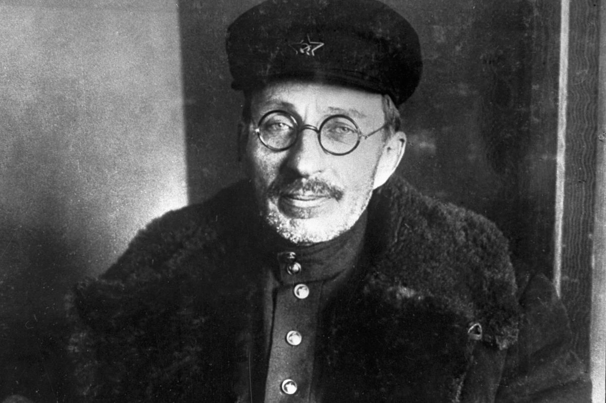

Антон Семёнович Макаренко
Антон Семёнович Макаренко родился неподалёку от Полтавы в небольшом украинском городе Крюкове (ныне Кременчуг). Воспитание в интеллигентной семье сформировало его тягу к знаниям: ещё ребёнком он полюбил чтение и заинтересовался социологией, астрономией, естествознанием и художественной литературой. Окончив в 17 лет Крюковское железнодорожное училище, Макаренко стал там преподавателем и преподавал практически все дисциплины.
В 1920 году Полтавское управление образованием поручило молодому педагогу возглавить «колонию для дефективных». Штат колонии в селе Ковалёвка состоял из трёх учителей (двое из которых — женщины) и завхоза. Никакой охраны не было.
В декабре 1920 года учреждение пополнилось первыми подопечными — взрослыми, крепкими юношами, которые вовсе не собирались менять привычный образ жизни. Их поведение напоминало отдых: сытые дни сменялись походами за добычей в соседние деревни, когда еды не хватало. Вместо учёбы и работы воспитанники коротали время за картами и игрой в ножички, а на любые попытки привлечь их к полезным занятиям реагировали агрессивно, угрожая в ответ. Макаренко понял, что стандартные воспитательные методы здесь бесполезны.